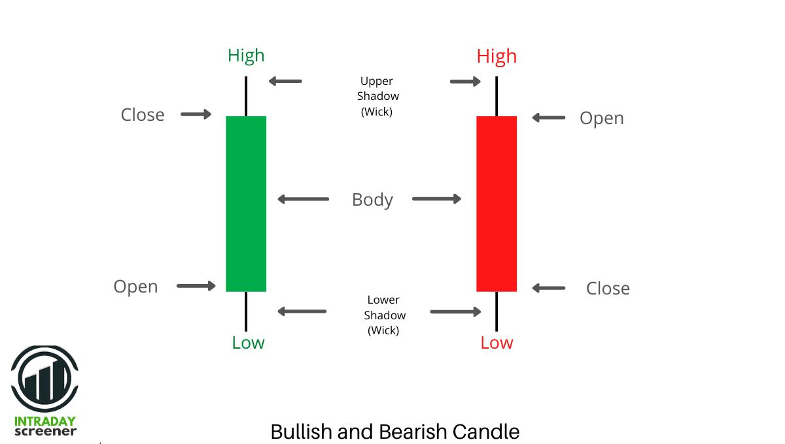
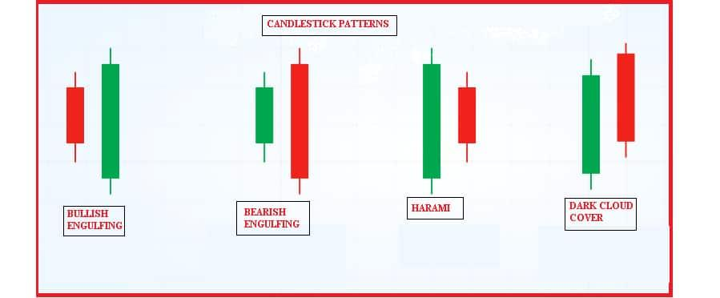

Understanding Candlesticks 📊
Candlesticks are the basic language of the market. Every candle tells a small story about what buyers and sellers did during a specific time.
Instead of just looking at numbers, candles let you visually understand price movement — who is winning, who is losing, and where the market might go next.
💡 One candle = One time frame (1m, 5m, 1h, 1D)
🧱 Structure of a Candle
- Open – The price where the candle started. This is where the battle between buyers and sellers begins.
- Close – The final price when the candle ends. This is the most important part because it shows who won.
- High – The highest price reached during that time. It shows how far buyers were able to push.
- Low – The lowest price reached. It shows how strong the sellers were at their peak.
📊 OHLC = Open, High, Low, Close
🟢 Bullish vs 🔴 Bearish

🟢 Bullish Candle
The price closed higher than it opened. This means buyers were stronger and pushed the price up.
The bigger the candle body, the stronger the buying pressure.

🔴 Bearish Candle
The price closed lower than it opened. This shows sellers took control and pushed the market down.
Large bearish candles often signal strong selling pressure.
🟢 Buyers in control = Market going up
🔴 Sellers in control = Market going down
📌 Common Candlestick Patterns
- Doji – The open and close are almost the same. This shows indecision — neither buyers nor sellers are in control.
- Engulfing – A strong candle completely covers the previous one. This often signals a shift in momentum.
- Hammer – A candle with a small body and long lower wick. It shows sellers tried to push price down but buyers stepped in.
⚠️ These are just trader version of astorology😆. Do not blindly follow these, combine with Support and Resistance to have an edge.
📈 Real Example
Imagine a stock:
This means buyers were in strong control throughout the session. They kept pushing the price higher and did not allow sellers to take over.
This kind of move often shows confidence in the market.
🧠 Tips
🚫 Don’t make decisions based on just one candle
✅ Always look at the bigger picture — trend direction, key levels, and trading volume.
A single candle can be misleading, especially on smaller time frames, but multiple confirmations increase your chances of success.
⚠️ Common Beginner Mistakes
- Trading every pattern without confirmation
- Ignoring the overall trend direction
- Focusing only on small timeframes (which are noisy and risky)
- Entering trades emotionally instead of logically
💡 Smart traders don’t just look at one candle — they read the entire story.
They understand how candles connect, how trends form, and where big players might be entering or exiting.
📌 Common Patterns
- Doji – Market indecision
- Engulfing – Strong reversal signal
- Hammer – Potential bullish reversal
- Shooting Star – Potential bearish reversal
- Morning Star – Bullish reversal pattern
- Evening Star – Bearish reversal pattern
- Harami – Possible trend reversal or slowdown
- Spinning Top – Weak momentum / indecision
- Three White Soldiers – Strong bullish trend
- Three Black Crows – Strong bearish trend
- Marubozu – Strong momentum (bullish or bearish)